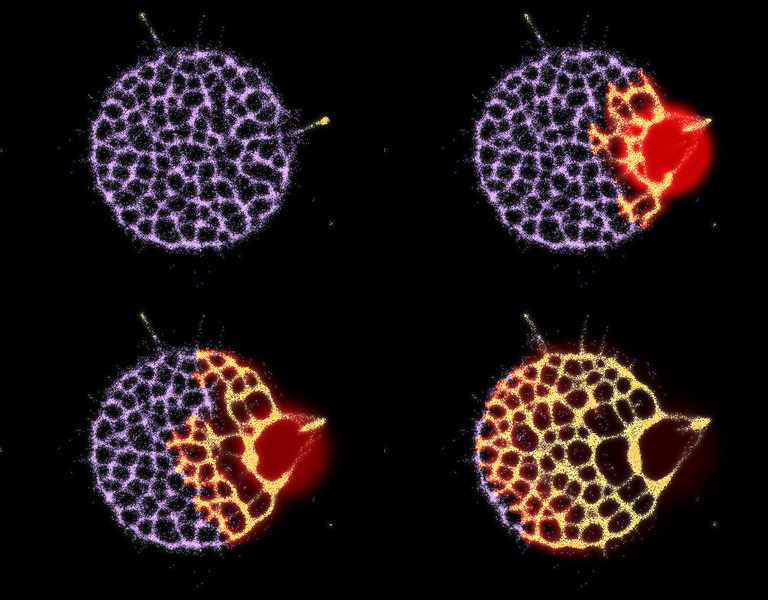

Each walker now has a life: it can fly as a spore, lie dormant, or die. A new field, the alarm, is laid where the player strikes (a strike kills every walker in a disc, clears its trail and lays alarm out to twice its radius), and walkers can be set to run toward it or away. From that come three rungs for the Larder ladder. Each one has a body, a way it answers attack, and a counter the player can learn. Every test below was named before it ran: 8 paired seeds, and each of the first four wins on 8 of 8.
All of it is data: walker counts and fields, no outline drawn. Videos run at twice real time, seed 1.
The tests further down ran on a test dish: a fixed number of walkers, no food economy, 20 seconds. Here the three moulds are re-run where the game runs. The world is 512 × 320 with 23 crystals that run dry. The mould starts as 5,000 walkers on its home crystal, then grows and starves. Strikes land on the home crystal. Every count is from 8 paired seeds, with the deciding measure named before the run. The videos are seed 1, at four times real time.
Three things changed to get the moulds into the game. Each tier now has a name the game can ask for. The squad's shots now lay the alarm the tiers react to (before, they laid none, so no reaction could fire). And a sleeping walker can now die. Free sleep froze a world whose crystals ran dry: the whole body asleep and unchanged for good.
In this world the Sleeper hardly leaves its home crystal. At 60 s it holds 1-4 crystals, against 11-23 for the plain mould. It is a nest, better as an early rung or a guard on a map than as a mould that outgrows an idle player.
The Sporer's edge shrinks in the world. The plain mould already sends tubes to every crystal within seconds, and plain runs vary more from seed to seed than the Sporer adds. Striking it launched 64-252 spores, against 2-13 without the burst, but that won it no extra crystals (more on 4 of 8, fewer on 2). The counters named below (starve, bait, kill zone) are still proposals: none has yet been tested against a random player.
A walker feeding on a pile sometimes fruits: it leaves its cell and flies. For the first half of the flight it goes straight and can't land, so it leaves home. Then it steers by scent and lands on the first free cell over food. The faint streaks are spore paths.
spore_rate 1e-4, 0 to 20 s
It is too fast at this rate: it holds all 7 piles by 10 s on 6 of 8 seeds, and the owner's rule is that no mould takes the map in 10 s. The rate is the dial. Piles held, seeds 1-3:
spore_rate | 10 s | 20 s | 60 s |
|---|---|---|---|
| 1e-4 (above) | 4, 7, 7 | 7, 7, 7 | 7, 7, 7 |
| 1e-5 | 4, 6, 6 | 4, 7, 6 | 6, 7, 7 |
| 3e-6 | 3, 6, 5 | 3, 6, 5 | 3, 6, 5 |
| no spores | 3, 4, 5 | 3, 4, 5 | 3, 4, 5 |
With spore_burst, a walker in alarm fruits too, food or no food. One strike at the body's left edge at 10 s.
The counter is to starve a Sporer, not hit it: it fruits only where it feeds, and every strike spreads it. (Walkers left at the wound was looked at after the run, not named before it.)
Off food, walkers fall dormant: by 10 s, 99% of the body is a violet crust. Alarm wakes a dormant walker, and a waking walker adds alarm to its own cell, so the wake runs through the crust, across the whole body in about 2 s, and the woken mould rushes the wound. After 2 s awake it can sleep again, and a walker that just fell asleep is deaf to alarm for 5 s.

Sensors add 3 × alarm to what they read, so the mould leans into a wound. 11 strikes, every half second from 10 to 15 s, at the same spot on the left edge.
alarm_weight +3
A kill zone is the counter: hold fire on one spot and it keeps coming.
alarm_weight −10 (the poster is 20 s)
This is Jones and Adamatzky's light, which splits their blob. Here it opens a gap by the wound and scatters a few strands, but the fed arms hold the rest of the body to its piles, and the alarm spreads only a few cells a second. It stays an option, not a tier. A mould that splits or migrates as a body is still open.
Seeds 1-3, measures named before the runs, no test.
| Frame cost, 100,000 walkers, one core | ms a step |
|---|---|
| off | 25.2-25.9 |
| alarm field | 33.0-34.6 (+31%) |
| spores | 27.7-29.2 |
| sleep (dormant walkers don't move) | 16.5-16.8 |
| Tier | Body | When attacked | The player's counter |
|---|---|---|---|
| Sporer | a network that seeds outposts on far crystals | sprays spores; the wound empties | starve it; don't hit it |
| Sleeper | a dormant crust that holds its ground | wakes in a wave and rushes the wound | bait it, then strike while it is deaf |
| Swarmer | an ordinary network | leans into the wound | a kill zone |
All rules are off by default on the CPU big dish, and each one's doc comment is the spec for the GPU port. Spores cost the mould nothing today; in the world they should probably cost food.